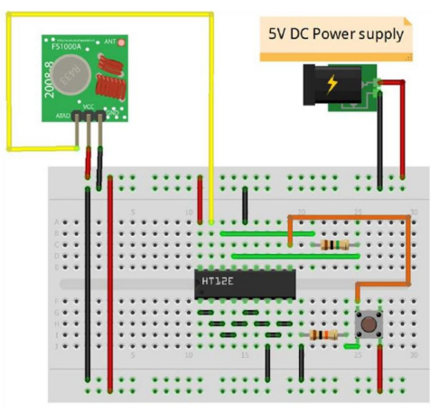
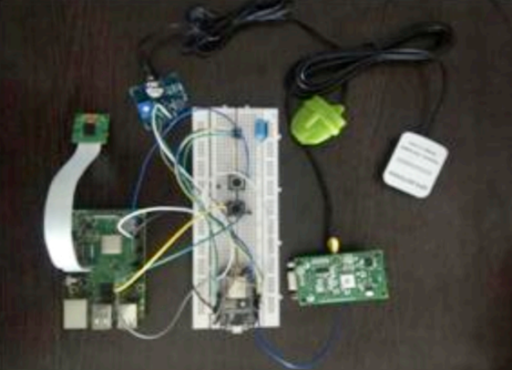

Women Safety system with GPS Tracking & Alerts canbe subdivided into two
sections such as Transmitter and Receiver section. The circuit diagrams for
each section is described as follows:
Transmitter Section: In the RF Transmitter part, there will be an SOS
button along with a 433 MHz RF transmitter, which will transmit the datato
the receiver part wirelessly. The purpose of making two individual parts
here is, to minimize the size of the transmitting module so that it can be
worn as a wrist band. The circuit diagram for the transmitter part is shown
below:

Receiver Section: In the RF Receiver section, the data transmitted from
the wrist band (Transmitter part) is received by the device having a 433
MHz RF receiver. The RF receiver sends this information to Arduino
through the digital pin. Arduino Nano then receives the signal and
processes it using the program which is flashed into it. When the victim
presses the SOS button in the transmitter part, a HIGH signal isgenerated
and passes tothe Arduino side, and then Arduino sends a signal to
SIM900 modem, to send an SMS to Registered user along with the GPS
coordinate which has already been stored in the Microcontroller by the
help of NEO6M GPS module. The circuit diagram of the Receiver side is
shown as below:
